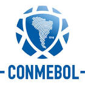

|  | CONMEBOL |
| Ethnic | South American |
| Job | South American Football Agency |
| Desc | xxxx |
Affiliation
| Location | South America |
2018 04 13 Retrieve
[North America 2026 World Cup bid receives CONMEBOL endorsement] The United bid of Canada, Mexico and the United States is grateful for today’s endorsement by CONMEBOL, the confederation representing the 10 South America member associations. The announcement builds on the support of UNCAF’s six voting member associations that the United bid was honoured to receive in March. We look forward to continuing our conversations with Member Associations across the world, highlighting the operational and economic certainty of our bid with the entire FIFA family
2018 05 04 Retrieve
[Mexico, United States not included as CONMEBOL] The 2019 Copa America Brazil will be a passionate competition in which anyone can win the title. In addition to having the participation of the national teams from our 10 member associations, we’re once again welcoming the Japan national team, whose association we have a close link of friendship and good relationship with. And, for the first time, we’ll have the participation of the Qatar national team, which will be the host of the 2022 FIFA World Cup.
2018 08 14 Retrieve
[Chile’s capital city Santiago has been chosen by CONMEBOL as the venue for the first single Copa Libertadores final] In a Committee meeting held today [Tuesday] two historic decisions were taken. Santiago de Chile will host the one-off final of the CONMEBOL Libertadores 2019.
2018 11 24 Retrieve
[Copa Libertadores final suspended in farcical circumstances after Boca bus attack] Players from the Boca Juniors club suffered light cuts on their legs, arms, faces and abdomens. Two players alleged injuries in their corneas, which could not be confirmed by our medical body. Due to that situation, we consider that from a medical point of view there is no reason for the suspension of the game.
2018 11 27 Retrieve
[CONMEBOL opens disciplinary proceedings against River Plate following Copa Libertadores chaos] The South American Football Confederation - CONMEBOL - announced that the Disciplinary Unit has opened a disciplinary process ex officio against Club Atlético River Plate, due to incidents that occurred on November 24, 2018, the date that the second leg match of the CONMEBOL Copa Libertadores 2018 was scheduled. The Club has been notified and has a period of 24 hours from the notification to respond to the allegations and present the evidence that in its defense it deems appropriate
- 2019 06 07
- Why are Japan & Qatar playing at Copa America 2019? In short, it’s to fill in the remaining gaps in the tournament. There are only 10 national teams in South America - Argentina, Bolivia, Brazil, Chile, Colombia, Ecuador, Paraguay, Peru, Uruguay and Venezuela - and so CONMEBOL had to invite teams from another federation to compete as a 12-team competition
- 2019 06 21
- CONMEBOL president Alejandro Dominguez on changing the competition calendar to even years from 2020
- 2019 07 04
- Conmebol has confirmed problems with the VAR system used in Brazil’s controversial Copa America semi-final win over Argentina, with reports that Brazil president Jair Bolsonaro’s security team were to blame for communication issues. The South American continental governing body has insisted that the problems were fixed before kick-off in Belo Horizonte on Tuesday night
2019 07 07 Retrieve
[CONMEBOL have responded to allegations of corruption as they labelled Lionel Messi’s comments ‘unacceptable’ and ‘unfounded’ at the Copa America] In football sometimes you win and sometimes you lose and accepting the outcome of a match with loyalty and respect is a fundamental pillar of fair play. Same goes to the refereeing decisions, that are human and will never be perfect. It’s unacceptable that because of incidents proper to the competitions, where 12 nations competed in, all in equal condition, there have been unfounded accusations that misrepresent the truth and put to judgement the integrity of Copa America. Said accusations represent a lack of respect for the competition, all the football players involved and the hundreds of professionals of CONMEBOL, an institution that since 2016 has been tirelessly working to professionalise and develop South American football.
2019 07 08 Retrieve
[Thus ended the 2019 Copa America, with Argentina and CONMEBOL on a virtual war-footing following a frenzied exchange of angry official statements and Messi potentially facing suspension for his outbursts against those in charge] Those accusations show disrespect to the competition, all those involved and the hundreds of CONMEBOL professionals, who since 2016 have worked tirelessly to make South American football more transparent, professional and developed
2019 07 24 Retrieve
[After being sent off against Chile, Messi skipped the Copa America medal ceremony, clearly still upset about his red card in the third-place game and what transpired in his nation’s semi-final defeat to host country Brazil] There is no doubt, the whole thing is set up for Brazil. I hope the VAR and referees don’t play any part in the final and that Peru can compete but it looks tough to me. I did not want to be part of this corruption, we shouldn’t have to be part of this disrespect we suffered during the Copa America. We could have gone further but we weren’t allowed into the final. Corruption, referees and all the rest stopped people from enjoying the football
2019 07 24b Retrieve
[Lionel Messi’s inflammatory comments claiming that there was corruption within the federation relating to the Copa America tournament. CONMEBOL responded to Messi’s comments with a withering statement of their own] In football sometimes you win and sometimes you lose and accepting the outcome of a match with loyalty and respect is a fundamental pillar of fair play. Same goes to the refereeing decisions, that are human and will never be perfect. Said accusations represent a lack of respect for the competition, all the football players involved and the hundreds of professionals of CONMEBOL, an institution that since 2016 has been tirelessly working to professionalise and develop South American football
- 2019 07 24
- CONMEBOL have handed Lionel Messi a $1500 fine for his inflammatory comments claiming that there was corruption within the federation relating to the Copa America tournament
- 2019 08 02
- Lionel Messi has been suspended from Argentina’s next three matches and given a $50,000 by CONMEBOL for his controversial comments made during the Copa America
2019 08 08 Retrieve
[Brazilian star Gabriel Jesus has been handed a two-month international ban by CONMEBOL for his behaviour during the Copa America final last month] the player is suspended to play official and friendly matches with his national team in that period of time
[They decided that Jesus broke Articles 7.1 and 7.2 of the Disciplinary Rules for] behaving in an offensive, insulting or defamatory manner of any kind
2019 10 26 Retrieve
[One further complication should protests continue to escalate looms on November 23, with River Plate and Flamengo due to descend on the Estadio Nacional in Santiago for the first-ever Copa Libertadores final to be played across a single match on neutral territory] Santiago is the site for the Libertadores final. They will recover from what they are going through
2019 11 05 Retrieve
[Copa Libertadores final moved to Lima amid continuing Santiago protests] New circumstances of force majeur and public order, analysed and evaluated with care, considering the safety of players, fans and delegations, have motivated the decision to take the final of the Copa Libertadores to Lima, Peru and maintain the date of November 23. The choice of the new stage is based on an offer from the government of Peru and on the safety guarantees it has given. The decision was agreed upon with the presidents of Flamengo and River and the associations of Argentina, Brazil and Chile and is also based on the policy of holding each of the single finals in different countries. CONMEBOL is grateful to the government of Chile for its active collaboration that different public bodies offered to organise the 2019 Libertadores single final. We wish the Chilean people and its authorities peace and goodwill
2020 04 10 Retrieve
[Lionel Messi’s reputation with the continental tournament, however, has been tarnished after his controversial claims that the 2019 Copa America was rigged in favour of hosts Brazil. Messi was then fined $1500 by CONMEBOL and handed a one-match international ban] In football sometimes you win and sometimes you lose and accepting the outcome of a match with loyalty and respect is a fundamental pillar of fair play. Same goes to the refereeing decisions, that are human and will never be perfect